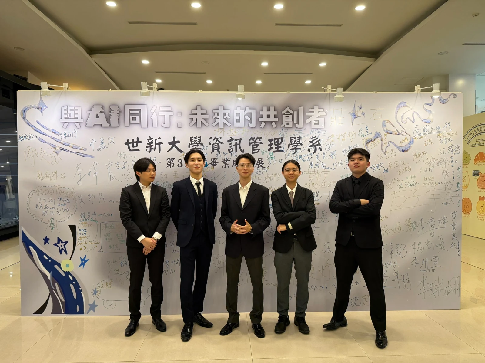
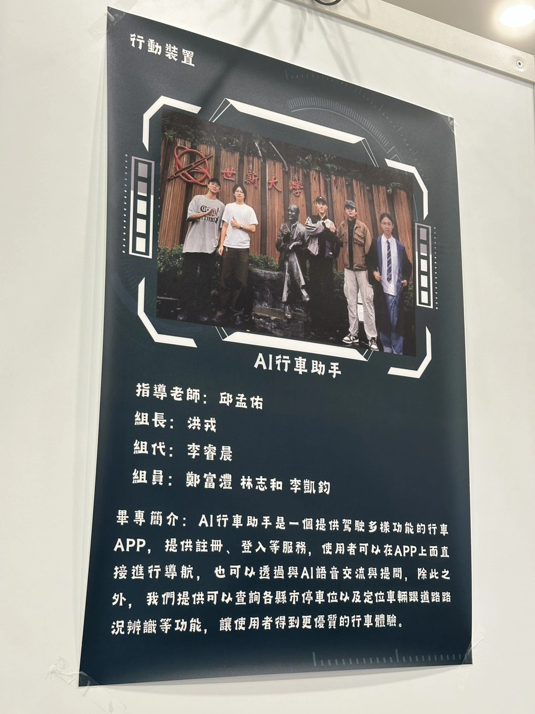
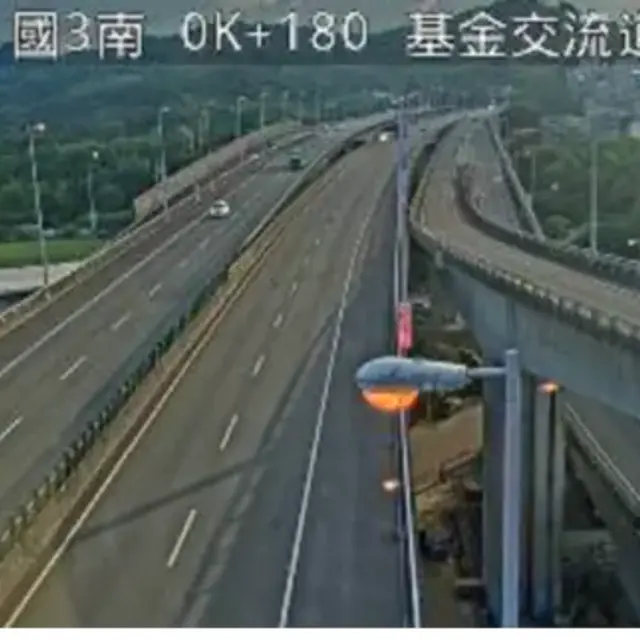
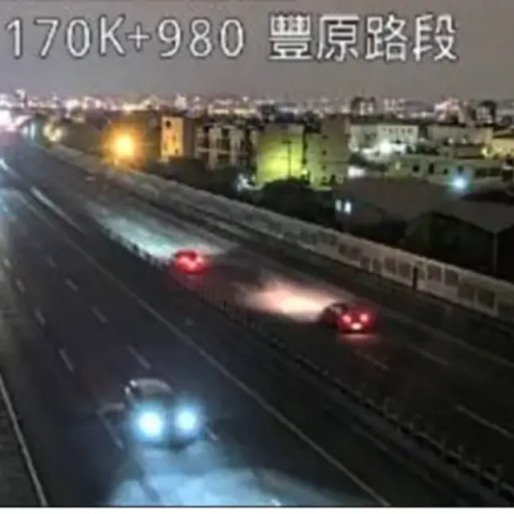
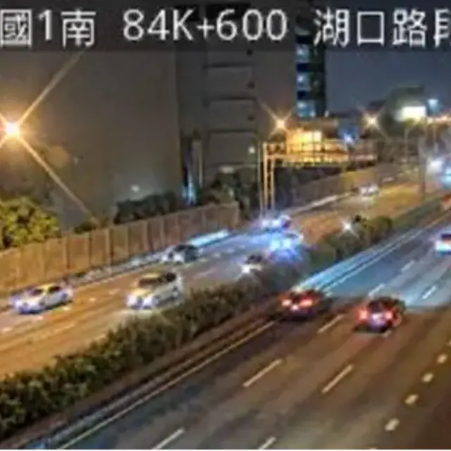
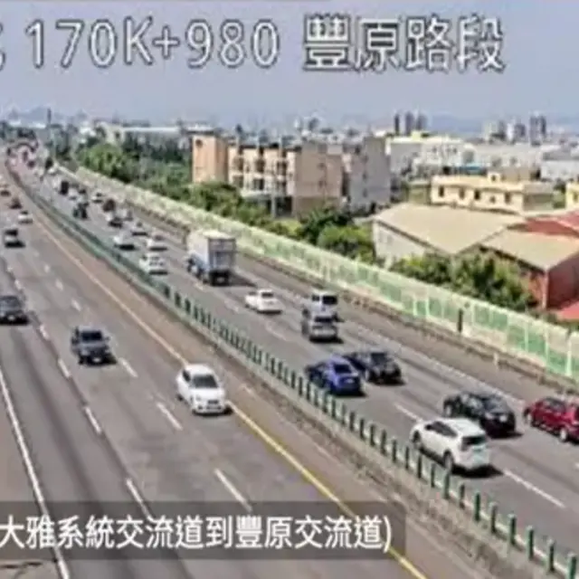
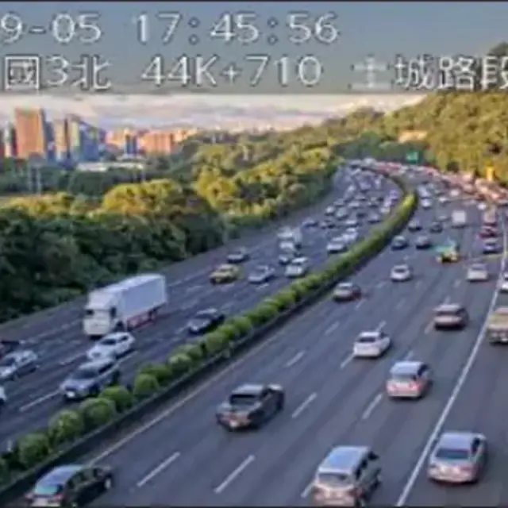
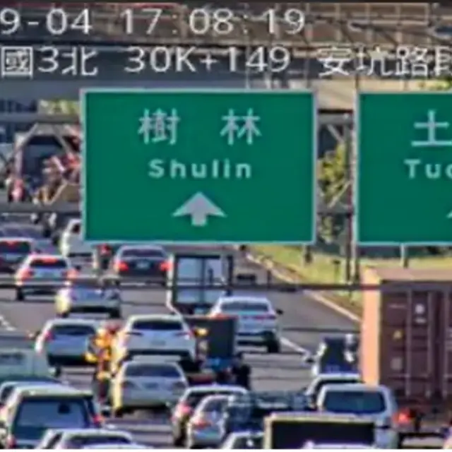
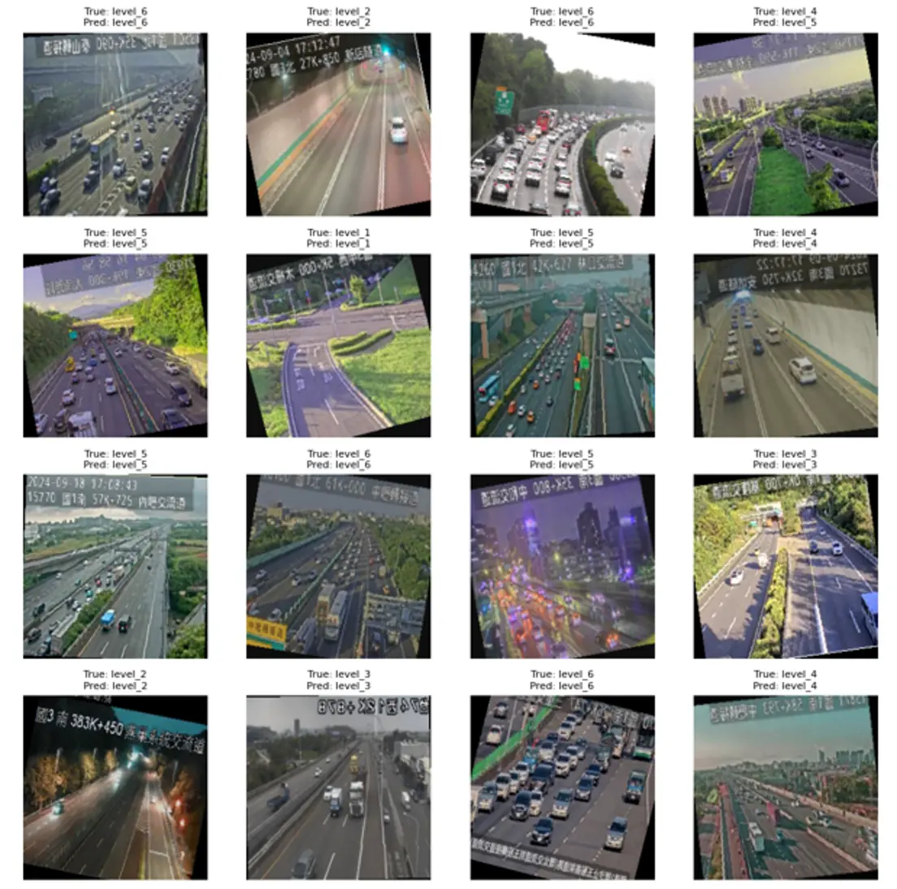
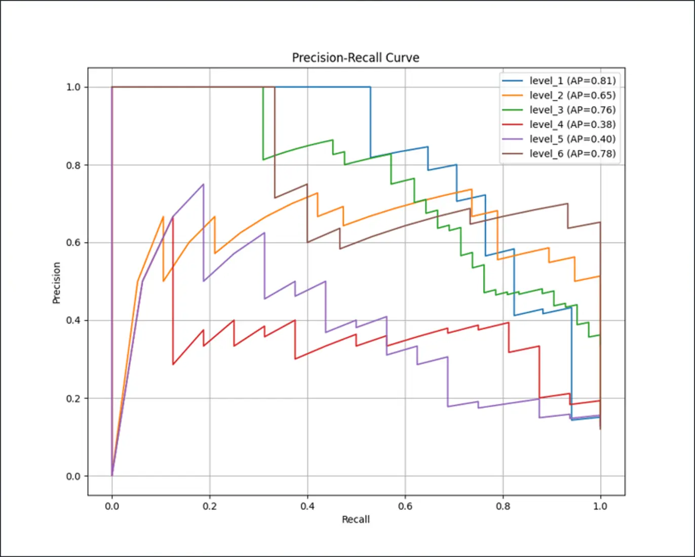

資料結構已分成六級，但仍需要更多天候、距離與攝影機差異
Android 應用程式 / 畢業專題
AI 行車助手
每天上下課塞車，讓我想把分散的停車、導航與路況資訊放在同一個 App


01專案起點
出發點，是每天上下課的路
每天塞車，加上常看到台灣交通事故的消息，我想試著整合駕駛需要的資訊
少切換幾個工具，就能多一點時間專注在路上
02團隊紀錄
一起完成的畢業專題


專題海報 查看大圖
03語音請求 → 停車資料
停車查詢，
背後怎麼運作
語音辨識接收需求，GPT 理解意圖，再向 TDX 查詢資料
- 01導航Google Maps
- 02停車資訊TDX 開放資料
- 03即時路況攝影機影像與道路資料
- 04AIGPT / STT / TTS
- 05車流模型ResNet-18 / 六級車流
互動流程示意 / 模擬
試著問：
「附近哪裡能停車？」
點擊播放資料流示意，沒有連接即時 API
- 01語音駕駛提出需求
- 02STT語音轉成文字
- 03GPT理解使用意圖
- 04TDX API開放資料
- 05停車資訊剩餘車位
- 06回覆語音回覆
04訓練資料與結果
ResNet-18 / 六級車流分類
用真實資料
看模型表現






01 / 訓練資料
真實道路攝影機樣本

相鄰車流等級最容易混淆

L4／L5 表現最弱
- L1
- .81
- L2
- .65
- L3
- .76
- L4
- .38
- L5
- .40
- L6
- .78
專題原始研究素材 · ResNet-18 · 80% 訓練／20% 驗證
這兩個相鄰交通狀態，是模型最難區分的類別
Normalization 必須從 PyTorch 到 Android 全程一致
我們調整了什麼
- 統一 normalization
- 重新整理資料集
- 逐類別分析 Precision／Recall
05下一次會怎麼做
如果重做，
我會先改這些
- 01更大且更平衡的資料集
- 02更清楚的交通資訊體驗
- 03事故通知
- 04測速資訊
- 05更流暢、更理解情境的 AI 互動